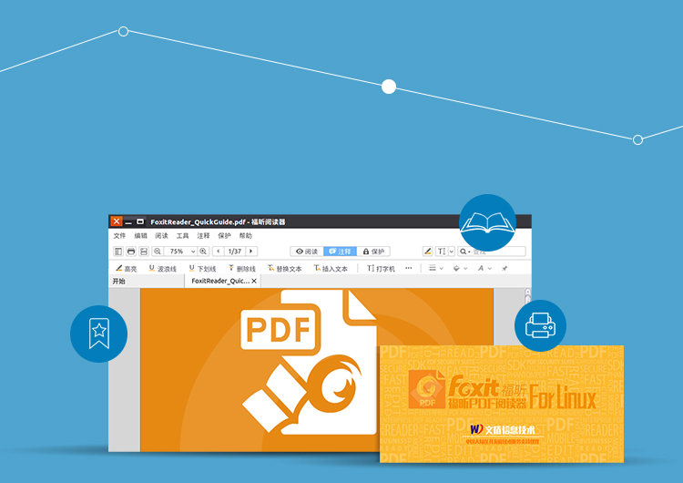

<div class="main wide">

<div class="text" style="position:absolute; top:80px; left:100px">

<div><h1>PDF Reader</h1></div>

<div><h3>
<p>Wendun Foxit Reader is based on Linux Foxit Reader, specially customized for Chinese users. A more convenient installation is supported, plus PDF documemt reading/ bookmark/ annotation and print etc..</p>
</h3></div>

</div>



</div>
